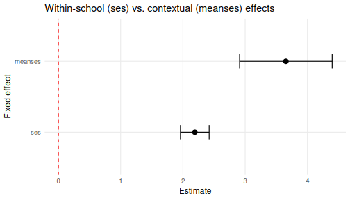
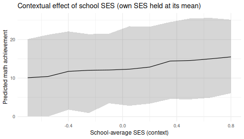
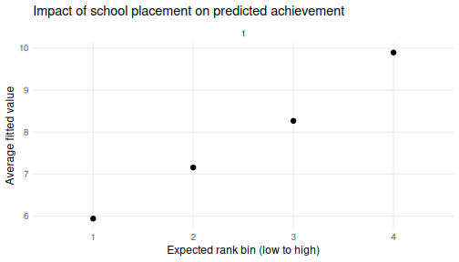

Exploring Contextual Effects with merTools
Jared Knowles and Carl Frederick
2026-05-29
Source:vignettes/contextual_effects.Rmd
contextual_effects.RmdContextual effects
In a multilevel model, a predictor measured at the individual level can also be aggregated to the group level, and the two can carry different meanings. The classic example is socio-economic status (SES): a student’s own SES captures a within-school relationship, while the average SES of a student’s school captures a contextual (or compositional) effect – the additional influence of attending a more or less advantaged school, over and above a student’s own background.
This vignette reproduces the kind of analysis described in the
modelbased package’s article “Studying
some effects in context” using the tools in merTools.
The data and model follow the contextual-effects example that has long
been used to teach multilevel modeling (Raudenbush and Bryk, 2002;
Gelman and Hill, 2007).
The data
merTools ships with hsb, a subset of the
1982 High School and Beyond survey: 7,185 students nested in
160 schools. It contains both a student-level SES measure
(ses) and the school-mean SES (meanses) –
exactly the pair we need to separate within-school and contextual
effects.
data(hsb)
str(hsb[, c("schid", "mathach", "ses", "meanses")])
#> 'data.frame': 7185 obs. of 4 variables:
#> $ schid : chr "1224" "1224" "1224" "1224" ...
#> $ mathach: num 5.88 19.71 20.35 8.78 17.9 ...
#> $ ses : num -1.528 -0.588 -0.528 -0.668 -0.158 ...
#> $ meanses: num -0.428 -0.428 -0.428 -0.428 -0.428 -0.428 -0.428 -0.428 -0.428 -0.428 ...A contextual-effects model
We model math achievement as a function of a student’s own SES and the average SES of their school, allowing each school its own intercept:
cm <- lmer(mathach ~ ses + meanses + (1 | schid), data = hsb)
arm::display(cm)
#> lmer(formula = mathach ~ ses + meanses + (1 | schid), data = hsb)
#> coef.est coef.se
#> (Intercept) 12.66 0.15
#> ses 2.19 0.11
#> meanses 3.68 0.38
#>
#> Error terms:
#> Groups Name Std.Dev.
#> schid (Intercept) 1.64
#> Residual 6.08
#> ---
#> number of obs: 7185, groups: schid, 160
#> AIC = 46578.6, DIC = 46559
#> deviance = 46563.8The coefficient on ses is the within-school
slope; the coefficient on meanses is the
contextual effect. merTools::FEsim() summarizes
the uncertainty in both, and plotFEsim() highlights the
terms whose interval excludes zero:
fe <- FEsim(cm, n.sims = 500)
plotFEsim(fe) +
labs(title = "Within-school (ses) vs. contextual (meanses) effects")
plot of chunk feplot
Predictions that separate the two effects
Because meanses enters the model directly, we can ask
how the predicted math score changes as we move a student across schools
of differing average SES while holding their own SES fixed.
wiggle() builds the counterfactual data and
predictInterval() attaches prediction intervals:
# A median student in an average school
base_case <- draw(cm, type = "average")
scenarios <- wiggle(base_case, varlist = "meanses",
valueslist = list(seq(-0.7, 0.8, by = 0.15)))
pi <- predictInterval(cm, newdata = scenarios, level = 0.9, n.sims = 500,
seed = 11213)
scenarios <- cbind(scenarios, pi)
ggplot(scenarios, aes(x = meanses, y = fit, ymin = lwr, ymax = upr)) +
geom_ribbon(alpha = 0.2) +
geom_line() +
labs(x = "School-average SES (context)", y = "Predicted math achievement",
title = "Contextual effect of school SES (own SES held at its mean)") +
theme_minimal(base_size = 12)
plot of chunk wiggle
How much do schools matter across the rank distribution?
Finally, REimpact() summarizes how much being in a
higher- versus lower-performing school shifts the predicted outcome,
binning schools by their expected rank. plotREimpact() (new
in this release) plots the result, and can overlay several cases for
comparison:
imp <- REimpact(cm, newdata = hsb[1, ], groupFctr = "schid",
breaks = 4, n.sims = 500)
plotREimpact(imp) +
labs(title = "Impact of school placement on predicted achievement")
plot of chunk reimpact
References
Bates, D., Maechler, M., Bolker, B., and Walker, S. (2015). Fitting Linear Mixed-Effects Models Using lme4. Journal of Statistical Software, 67(1), 1-48.
Gelman, A. and Hill, J. (2007). Data Analysis Using Regression and Multilevel/Hierarchical Models. Cambridge University Press.
Lüdecke, D., et al. modelbased: Studying some effects in context. easystats. https://easystats.github.io/modelbased/articles/practical_context_effect.html
Raudenbush, S. W. and Bryk, A. S. (2002). Hierarchical Linear Models: Applications and Data Analysis Methods (2nd ed.). SAGE.